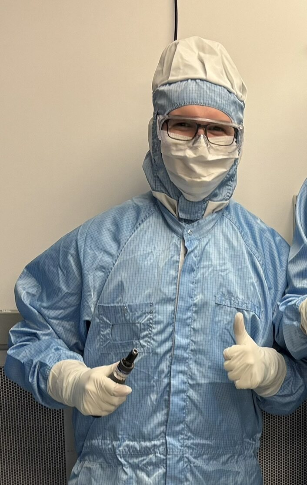
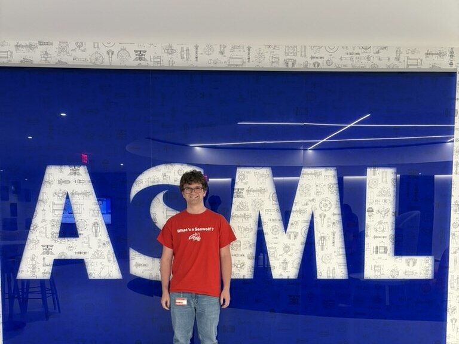
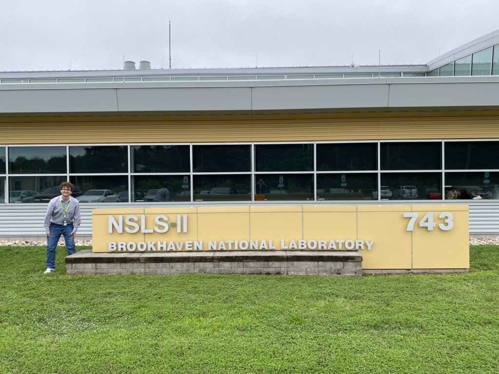
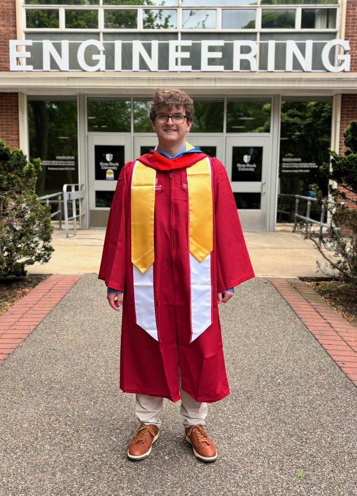
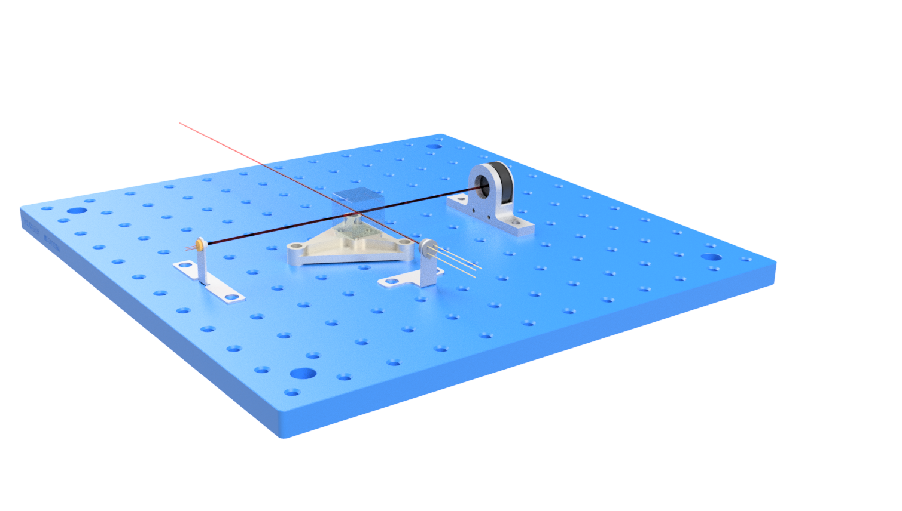
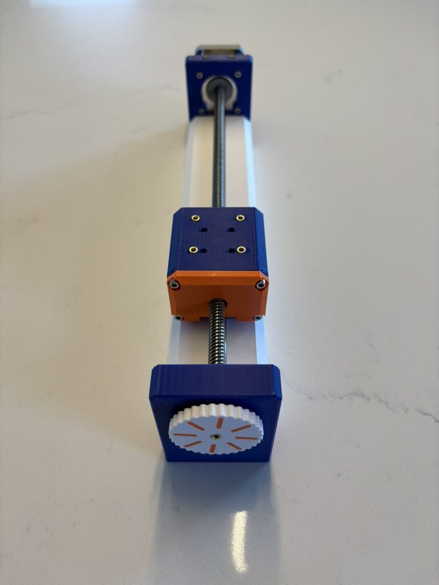
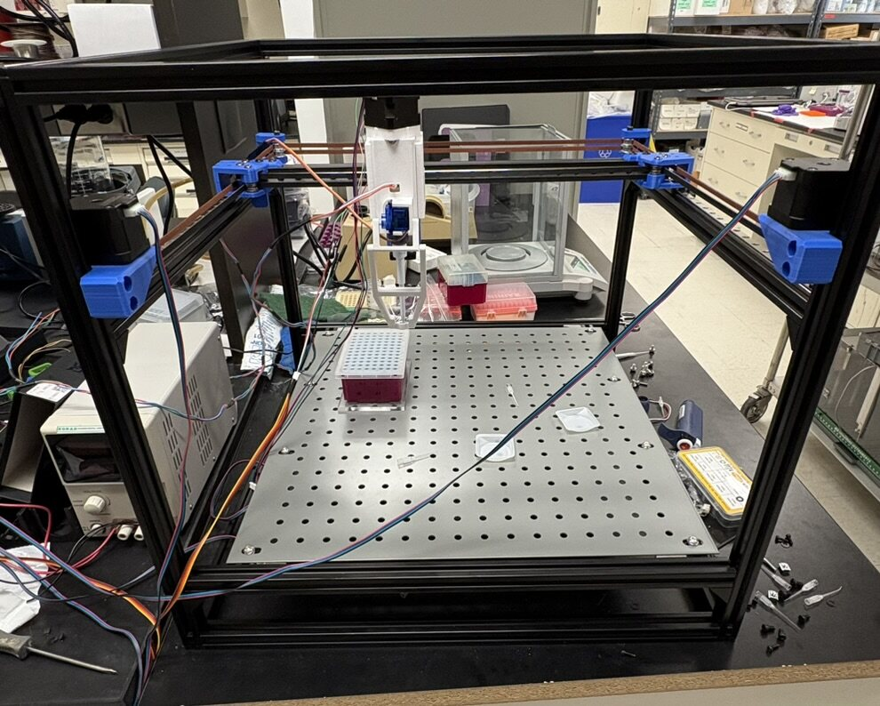
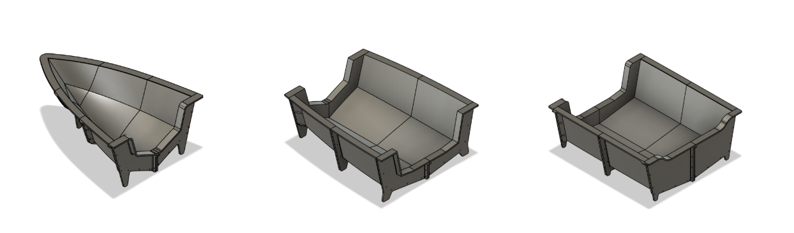
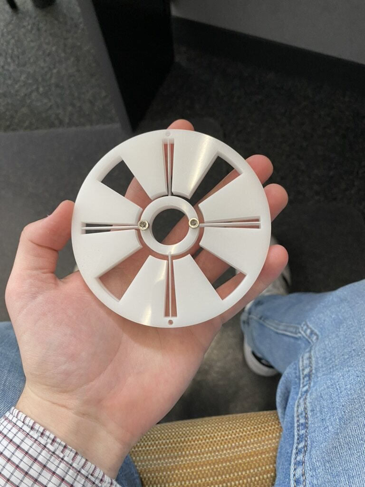

Automated HXN Endstation Shutter
A modular, pneumatically actuated shutter system designed and installed at the Hard X-Ray Nanoprobe beamline at Brookhaven National Laboratory, still in daily use.
Mechanical Engineer · Precision Design & Automation
I design and build precision hardware. My work so far spans semiconductor lithography, synchrotron beamlines, and lab automation.

I'm a mechanical engineer interested in precision machine design, high-tech automation, and optomechanics, equally comfortable in simulation and on the factory floor. My direct experience is in the semiconductor and lab automation industries, working with precision hardware, vacuum systems, and industrial automation.
My approach to problem solving is practical: get to the root of the issue and favor simple solutions over clever ones. Cost is a core design constraint for me, not an afterthought, and I'm always looking to push beyond raw performance metrics.
Siemens NX · Autodesk Inventor · Fusion 360 · PDM/PLM (Vault, Teamcenter) · GD&T (ASME Y14.5) · Tolerance Stackup Analysis · DfMA · Trade Studies / Pugh Matrices
FEA (Ansys, Abaqus, NX Design Sim) · First-Principles (Beam Theory, Contact Stress) · Monte Carlo · Optimization
3D Printing · Milling · Lathe · Laser Cutting · Sheet Metal · EDM · Adhesive Bonding · Carbon Fiber Layup
Python · MATLAB · C++ (Embedded) · Claude Code / Copilot
Advanced Control Theory · Forward/Inverse Kinematics & Dynamics · Trajectory Generation · Motor Control · Screw Theory
Soldering & Breadboarding · Instrumentation (Oscilloscopes, Function Generators) · Analog & Semiconductor Devices · Pneumatic Systems · Mechanical Testing (Tensile, Force Gauges) · Optical Inspection


Level Sensor Team · Precision Design & Optomechanics (EUV & DUV)
High-NA Reticle Position Alignment Sensor Team · Precision Design & Optomechanics
Beamline Engineering Group. Mechanical design for lab automation.
Low-Cost Lab Automation.
Stony Brook University · Accelerated B.E./M.S. Program
Stony Brook University · Summa Cum Laude · University Scholars
Tau Beta Pi & Pi Tau Sigma honor societies · Dean's List all 8 semesters

A modular, pneumatically actuated shutter system designed and installed at the Hard X-Ray Nanoprobe beamline at Brookhaven National Laboratory, still in daily use.

A kinematic tolerance analysis and inverse allocation tool for precision assemblies: SE(3) error propagation, Monte Carlo simulation, and convex optimization. Built AI-assisted in about a week.

A low-cost precision linear stage, plus the custom embedded system and vision software built to characterize it.

Kinematics and control simulations: PD/PID arm control, inverse kinematics, and workspace analysis.

A CoreXY liquid-handling robot for qPCR prep, built solo as a low-cost alternative to commercial systems.

Planing hull design and a modular 3D-printed mold for a carbon fiber solar-race boat, built with a 5-person team.

Shorter write-ups: an instrumentation rack, a BNL flexure rotation stage, an analog PID controller lab, and a heat transfer study.